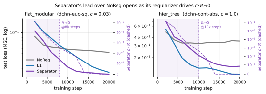
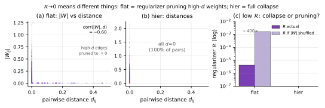
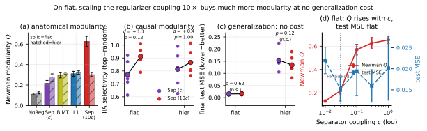

What is the Separator regularizer actually
doing?
When its penalty vanishes — pruning, or collapse?

flat=dchn-euc-sq,
hier=dchn-cont-abs.Setup and the question
Each neuron \(i\) carries a
representation \(\phi_i\) —
dual-channel codes \((\sigma^{(i)}_{\text{out}},\sigma^{(i)}_{\text{in}})=\sigma(\phi_i)\)
— and Separator penalizes wiring by \(\mathcal{R}=c\sum_{ij}|W_{ij}|\,d(\sigma^{(i)}_{\text{out}},\sigma^{(j)}_{\text{in}})\),
so weight between “far” (incompatible) neurons is expensive. By step
\(\sim\)8–10k, \(\mathcal{R}\) decays from \(\sim\)\(10^{-1}\) to \(\le10^{-6}\) and the Separator\(-\)NoReg test-loss gap opens during that
window (Fig. 1). (\(\phi\) is the field called pi
in code; we use the paper’s symbol.)
The penalty going to zero is consistent with two opposite stories, and the trajectory alone cannot tell them apart: (a) the codes collapsed — \(d\!\to\!0\) for all pairs, so \(|W_{ij}|d_{ij}\) is trivially \(\approx0\) and the codes carry no information; or (b) the regularizer succeeded — it drove \(|W_{ij}|\!\to\!0\) wherever \(d_{ij}\) is large, while the codes stay informative. So we decompose it.
What \(\mathcal{R}\!\to\!0\) actually means (it differs by task)
We read \(\phi\) and \(W\) from the same converged checkpoint, measure every pairwise distance \(d_{ij}\) directly (independent of \(W\)), and the weight each edge carries (Fig. 2). The decisive test: permute \(|W|\) within each layer to destroy any \(W\)–\(d\) alignment; if the low \(\mathcal{R}\) were just collapse, shuffling \(|W|\) would not change it.
flat: the
regularizer is working.
Only 82% of pairs reach \(d<10^{-3}\); the rest keep real distance (up to \(0.49\)). \(|W|\) is strongly anti-correlated with \(d\) (Spearman \(-0.60\)): high-\(d\) edges carry mean \(|W|\!=\!1.6\!\times\!10^{-4}\) vs \(5.7\!\times\!10^{-2}\) on low-\(d\) edges — pruned by \(>\)2 orders of magnitude. Shuffling \(|W|\) would raise \(\mathcal{R}\) from \(4\!\times\!10^{-6}\) to \(1.6\!\times\!10^{-3}\) (\(\sim\)\(400\times\)). So \(\mathcal{R}\!\to\!0\) here is the regularizer doing its job — pruning weight between incompatible neurons — and the codes remain informative.
hier: genuine
collapse.
\(d\!=\!0\) for 100% of pairs (max \(d\!=\!0\)); \(\mathcal{R}\!=\!0\) regardless of \(W\) (shuffling does nothing). The codes are uninformative and the regularizer is inert.
Ablations agree the codes must be meaningful.
Freezing \(\phi\) at its random init
(penalty stays large) is worse than NoReg (flat
\(0.049\) vs \(0.042\); hier \(0.698\) vs \(0.354\)); \(c\!=\!0\) recovers NoReg; learned-\(\phi\) is best (\(0.016/0.124\)). Random codes prune the
wrong edges — the regularizer only helps with learned codes,
consistent with the flat picture above.

flat — most pairs sit at
\(d\!\approx\!0\) but the high-\(d\) edges carry \(\approx\) no weight (anti-correlation \(-0.60\)): the codes keep structure and the
regularizer prunes. (b) hier — every distance is \(0\) (collapse). (c) actual \(\mathcal{R}\) vs. \(\mathcal{R}\) with \(|W|\) shuffled within each layer: on
flat shuffling raises \(\mathcal{R}\) \(\sim\)\(400\times\) (low \(\mathcal{R}\) needed the \(W\)–\(d\)
alignment \(=\) pruning), on
hier both are \(0\)
(collapse).Coverage
Across all five v10 cells (Table 1), no
single regularizer dominates — Separator wins
flat/dense but loses on
hier (\(0.154\)) to
Flat-Simplex (\(0.099\)), L1 (\(0.111\)), and BIMT (\(0.120\)). The decomposition lines up with
this: where Separator is best (flat) the regularizer is
working; where it is worst (hier) the codes collapsed. Only
Separator’s learned-\(\phi\) ever goes
inert (8–14k); constant-magnitude regularizers (L1, BIMT) never do.
| Regularizer | flat |
flat_rot |
weak |
dense |
hier |
\(\mathcal{R}\!\to\!0\)? |
|---|---|---|---|---|---|---|
Separator (dchn) |
0.015 | 0.015 | 0.018 | 0.031 | 0.154 | yes (8–14k) |
Flat-Simplex (sim) |
0.021 | 0.022 | 0.021 | 0.045 | 0.099 | no |
WiringPrior (pos) |
0.041 | 0.041 | 0.048 | 0.081 | 0.352 | \(\mathcal{R}\!\approx\!0\) throughout |
BIMT (grid) |
0.015 | 0.019 | 0.016 | 0.039 | 0.120 | no |
L1 (empty) |
0.018 | 0.020 | 0.020 | 0.040 | 0.111 | no |
| NoReg | 0.042 | 0.043 | 0.048 | 0.084 | 0.346 | — |
A lever the HP search missed
The coupling \(c\) was selected to
minimize validation MSE — an objective blind to modularity.
Re-running the Separator winners at \(10\times\) \(c\) (5 seeds, real IIA; Fig. 3) shows, on flat: Newman
\(Q\) \(0.22\!\to\!0.63\), IIA selectivity \(0.77\!\to\!0.91\) (better on 4/5 seeds,
\(d\!=\!1.3\), \(p\!=\!0.13\) at \(n\!=\!5\)), test MSE essentially unchanged
(\(0.015\!\to\!0.016\), \(p\!=\!0.62\)). The \(c\)-sweep (Fig. 3d) shows \(Q\) climbing with \(c\) while test MSE stays flat. The effect
is task-specific: on hier the stronger coupling buys little
(\(d\!=\!0.4\), \(p\!=\!1.0\)). At least on
flat, modularity and generalization are not in tension — we
simply hadn’t pushed \(c\).

flat, negligible on hier; (c) test
MSE (no significant change); (d) flat \(c\)-sweep: \(Q\) rises with \(c\), test MSE flat. Dotted \(=\) HP-picked \(c\).Open question: is the collapse a bug?
The decomposition sharpens the question. On flat the
regularizer works (informative codes \(+\) pruning); on hier it
collapses to the degenerate \(d\!=\!0\)
minimum — and that collapse coincides with Separator’s worst
performance. So the collapse looks less like a benign “annealed
curriculum” and more like a failure mode on hard tasks.
The open question: can we prevent it and recover flat-like
behavior where it currently collapses? Our targeted anti-collapse
attempts (direct \(d\!\to\!0\) penalty;
high-temperature binary codes \(+\)
diversity) didn’t beat the simple \(10\times\)-\(c\) point, but the \(d\!=\!0\) manifold is large, so that is
weak evidence. Next:
Keep \(\phi\) engaged on
hierand test whether an informative, non-collapsed \(\phi\) beats canonical Separator on \(Q\), IIA, and test loss. A win \(\Rightarrow\) the collapse was a bug worth fixing.Settle the \(c\) lever: extend the
flat\(c\)-sweep to all 5 cells \(\times\) \(\ge\)5 seeds with real IIA — push theflatIIA gain to significance and map where “modularity for free” holds.Describe \(\mathcal{R}\!\to\!0\) per task (pruning vs. collapse), not as a blanket statement that the codes are inert.
Appendix — Q&A
Q. How is Newman modularity \(Q\) computed? Nodes \(=\) all neurons (input \(24\) \(+\)
two hidden \(64\) \(+\) output \(1\) \(=153\) for the v10 MLP). Edges \(=|W_{ij}|\) between adjacent
layers only — one weighted undirected edge per nonzero weight (\(5696\) edges); no within-layer or
skip-layer edges. Communities are found by greedy modularity
maximization (Clauset–Newman–Moore, networkx
greedy_modularity_communities); \(Q\) is the weighted Newman modularity of
that partition.
Q. Were hyperparameters picked on validation or test
MSE? Validation. HP winners are chosen on a dedicated selection
split (split_use=selection, task_seed=2026);
the reported final/test numbers use a disjoint split
(split_use=final, task_seed=4242). Earlier
“test MSE” phrasing for HP selection was imprecise and is corrected
here.
Q. Does \(\mathcal{R}\!\to\!0\) prove the codes
collapsed? No — that was the gap this revision fixes. \(\mathcal{R}=c\sum|W_{ij}|d_{ij}\!\to\!0\)
if either \(d_{ij}\!\to\!0\)
(collapse) or \(|W_{ij}|\!\to\!0\) on high-\(d\) edges (the regularizer working). The
\(|W|\)-permutation test (§2, Fig. 2c) separates them: flat is
pruning, hier is collapse.
Reproducibility: all numbers regenerated from per-run
results.json/events.jsonl, converged
state.pt (\(\phi\) and
\(W\)), and intervention chunks by the
scripts in the collapse_investigation folder
(decompose_collapse.py for §2). IIA \(=\) interchange-intervention mediation
strength; ablations are exact-HP reruns.